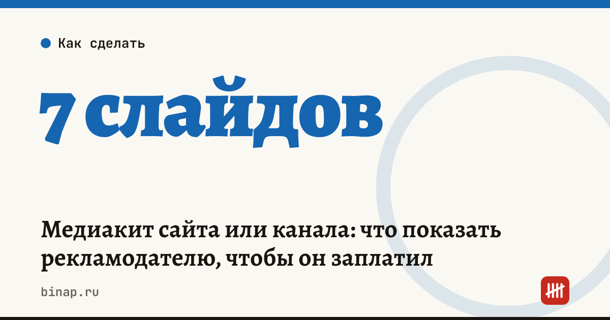

Медиакит сайта или канала: что показать рекламодателю

Медиакит — это короткая презентация сайта или канала для рекламодателя: кто вас читает, сколько человек увидят рекламу, какие есть форматы и сколько они стоят. Рекламодатель платит, когда цифры в медиаките проверяемые и свежие, а цена понятна без переписки. Хватает 7 слайдов.
Коротко
- Главное в медиаките — аудитория и охват, с датой и источником статистики.
- Цены — по форматам, плюс скидка за пакет.
- Отдельный слайд о маркировке: рекламодатель должен понимать, кто передаёт данные в ОРД.
- Медиакит обновляют раз в месяц — устаревшие охваты отпугивают сильнее, чем маленькие.
- Шаблон на 7 слайдов и письмо рекламодателю можно скачать бесплатно.
Сроки, изменения и разборы для ИП и самозанятых — каждое утро в Telegram и MAX. Подпишитесь, чтобы не пропустить.
7 слайдов медиакита
| Слайд | Что на нём | Откуда цифры |
|---|---|---|
| 1. Обложка | название, тема, для кого | — |
| 2. Аудитория | профессии, география, возраст | статистика сайта или канала на дату |
| 3. Охваты | посетители в месяц, подписчики, средний охват публикации | счётчик сайта, статистика канала, дата |
| 4. Форматы | обзор, пост, баннер, упоминание — что входит | ваш прайс |
| 5. Цены | цена каждого формата, скидки за пакет | ваш прайс |
| 6. Маркировка | erid, пометка «Реклама», кто передаёт данные в ОРД | договор |
| 7. Контакт | имя, почта, мессенджер, сроки размещения | — |
Готовый шаблон с этими слайдами — скачать бесплатно.
Как поставить цену
Цену за пост удобно считать от охвата: цена = средний охват публикации × CPM / 1 000, где CPM — сколько рекламодатель готов платить за 1 000 показов. Пример (расчёт редакции, цифры условные): средний охват поста 8 000, CPM 500 ₽ → 8 000 × 500 / 1 000 = 4 000 ₽ за пост. Если вы зарабатываете ещё и на партнёрках, сравните: сколько принёс бы тот же охват по партнёрской ссылке. Для этого есть калькулятор дохода с трафика и разбор EPC и конверсии.
Что проверить перед отправкой
- Охваты с датой. «Охват 8 000 (среднее за октябрь 2026)» вместо «охват до 15 000».
- Одинаковые цифры везде. Если рекламодатель откроет статистику канала, она должна совпасть со слайдом.
- Маркировка. Рекламу в интернете нужно маркировать и передавать сведения в единый реестр через ОРД (ст. 18.1 закона № 38-ФЗ). Как это сделать на сайте и в канале — в статье маркировка рекламы.
- Канал с большой аудиторией. Если у канала больше 10 000 подписчиков, проверьте, что он внесён в перечень Роскомнадзора: без этого размещать в нём рекламу нельзя.
- Налог с дохода. Доход от рекламы и партнёрок облагается налогом — как выбрать между самозанятостью и ИП, читайте в статье доход от партнёрок: самозанятый или ИП.
Все материалы для владельцев сайтов и каналов — в разделе «Вебмастерам».
Частые вопросы
Что делать, если охваты маленькие? Показывайте качество аудитории: кто читает, какая доля из нужной рекламодателю профессии или города. Маленький, но точный охват часто стоит дороже за показ.
Нужен ли медиакит Telegram-каналу? Да. Рекламодатели сравнивают десятки каналов, и тот, у кого цифры и цена собраны на одной странице, отвечает быстрее и получает заказ.
Как часто обновлять медиакит? Раз в месяц: охваты, цены и дата статистики.